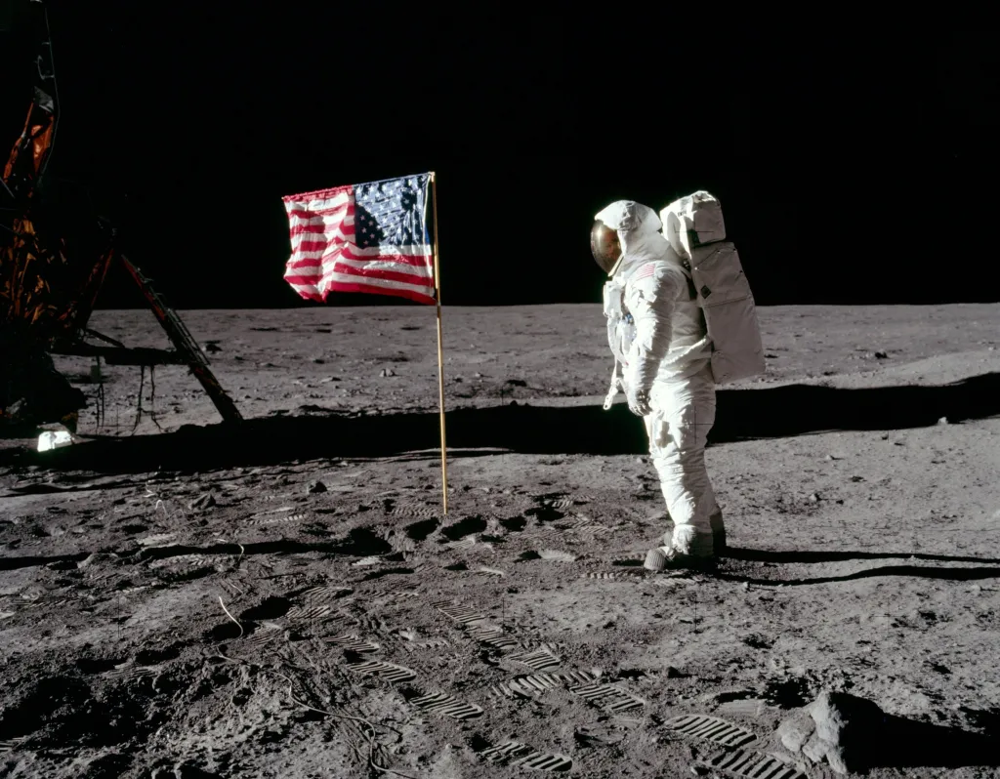
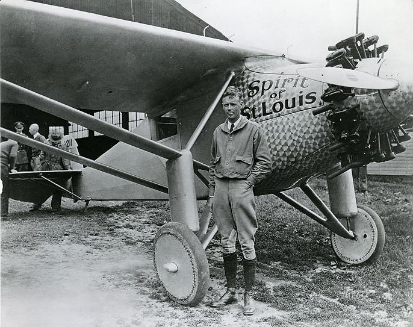
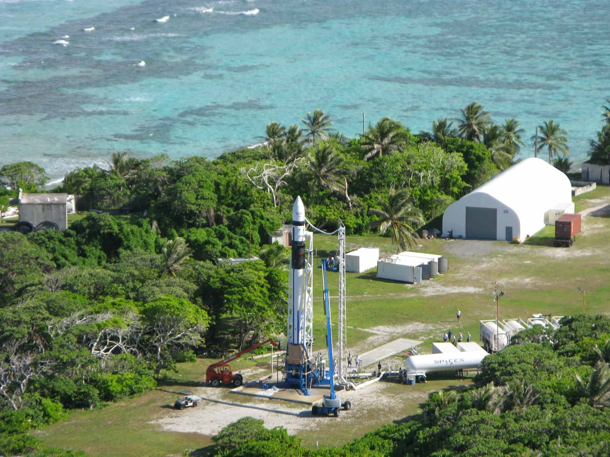

Bias Towards Risk
The greatest risk in life is refusing to take any risks at all. A life filled with risks is a life brimming with possibilities. Taking risks, however, comes at a cost - it demands courage, determination, and a willingness to step into the unknown. But without daring to take those leaps, extraordinary outcomes remain out of reach. Play it safe, and you’ll only find mediocrity.
Risk appetite is shaped by two factors:
- Your personality
- Your ambition
The willingness to take risk is one of the key qualities that set great entrepreneurs and innovators apart. Groundbreaking innovations and success are only possible through risk. The greatest breakthroughs don’t come from playing it safe—they arise when individuals push boundaries and dare to fail in pursuit of something bigger.
My favorite examples:
Apollo 11 mission (1969)

This mission was fraught with unprecedented technical uncertainty. There was no guarantee that the rocket would launch safely, that the astronauts would land on the moon, or that they would even return to Earth alive. But despite the risks, the moon landing became a monumental technological breakthrough, proving humanity’s capacity to overcome extraordinary challenges and changing the course of history.
First non-stop transatlantic flight (1927)

With extremely high risks involved, Charles Lindbergh encountered mechanical failures and navigational issues throughout the flight, at one point flying off course several times. But his daring journey ultimately succeeded, ushering in the age of international air travel and proving what was once thought impossible.
SpaceX & Falcon 1 (2008)

Image Credit: SpaceXI have already written about this in my essay “The Beauty of Going All In”. Elon Musk’s decision to continue investing in SpaceX, even when he was on the brink of bankruptcy, was a profound demonstration of his bias towards risk. There was no certainty that Falcon 1 would succeed, no assurance that SpaceX would survive, or that his vision for private space exploration would ever materialize. Yet, Musk’s relentless belief in the potential of his idea, coupled with his willingness to take extreme financial and personal risks, drove him to launch the fourth attempt. Today, SpaceX dominates rocket flight, launching more rockets than countries like the US and China.
When you deeply desire something — when both heart and mind are in alignment—the fear of risk may still hold you back. But in those moments, the urge to try, to take the leap, begins to outweigh that fear. This is the critical moment when life rewards you richly: with invaluable experience and doors to new opportunities.
Life is short. So take risks.